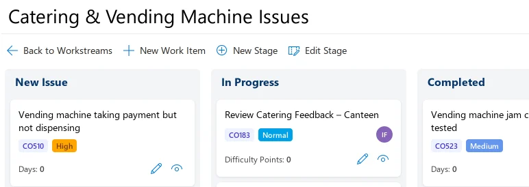
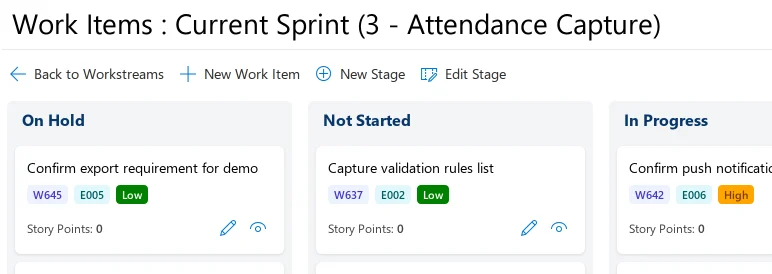
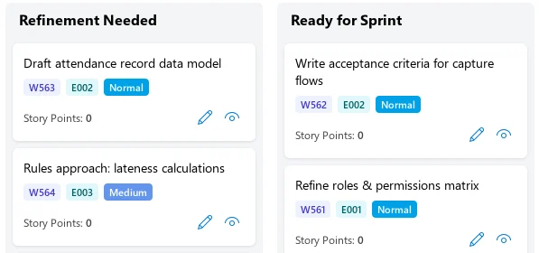

Kanban boards for everyday work. Sprints for delivery teams.
Group WorkStreams gives each stream of incoming work, such as complaints or HR requests, its own board and stages. In Agile Sprints, Scrum teams plan stories in a prioritised backlog and deliver them in sprints and releases.
- Staff sign in once with Microsoft Entra ID
- Hosted by ZedX, or in your own Azure with Enterprise
- An open demo with nothing to register
This site comes from a ZedX referral partner. We make the introduction, and Swiftpro Corporation Ltd, the company that makes ZedX, takes it from there.




Screens from the ZedX demo, which uses sample data for a college group. The demo sets up an account for you, so there’s nothing to register. Try the demo yourself
Group WorkStreams takes everyday work out of spreadsheets
Complaints, catering faults, HR requests and finance queries can each become a workstream, with its own Kanban board, stages and team. Everyone works from one board instead of a spreadsheet.
- Each service has its own boardStages are set for each workstream. In the demo, the complaints log has five and catering issues have three.
- Ownership you can seeEach work item shows its priority, from Low to Critical, and who has it once it is assigned.
- Managers see the workloadA dashboard shows where work is building up, without asking each person for an update.


Agile Sprints takes Scrum teams from backlog to release
Epics and user stories wait in a prioritised backlog, move across a board during each sprint and go into planned releases.
See how Agile Sprints works- Sprints start with a realistic goalThe team estimates stories in story points and takes on only what its capacity allows.
- Standup reporting is automatedThe sprint board shows what is in progress, finished or blocked.
- Velocity is measured every sprintThe team checks velocity against its target and any work carried over, then formally closes the sprint.



Everyday requests move across boards of their own. Stories move from backlog to sprint to release. Both apps share one ZedX login.
How the work moves, in three steps
Choose an app to follow its work from the first item to the result.
Group WorkStreams
Give each service a workstream
Complaints, catering faults or HR requests each get their own workstream, team and owners, grouped by department.
Set the stages, then log the work
Add stages on the board with New Stage and Edit Stage, then add a work item whenever a request comes in.
Watch the workload
The Insights dashboard counts the work items in every workstream you can access and shows which are critical.
Agile Sprints
Fill and rank the backlog
Epics hold the bigger requirements, and user stories break them into work, in priority order.
Plan the sprint to capacity
Estimate stories in story points and take on what the team’s capacity allows, with the sprint goal in view.
Run it, review it, close it
Work from the sprint board, check velocity against the target and any work carried over, then close the sprint.
Which app fits your work?
Both apps put work on boards. Choose by how work reaches your team and how far ahead you plan it.
| Group WorkStreams | Agile Sprints | |
|---|---|---|
| Who it suits | Operational, administrative, service and departmental teams with a steady flow of requests and cases. | Teams delivering software, technology projects or other work in Scrum or another method based on sprints. |
| How work arrives | At any time, as requests, cases, issues and routine jobs. | As epics and user stories in a prioritised backlog, planned before each sprint. |
| How it is planned | There is no fixed cycle. Work items move through the workstream’s stages as people handle them. | In timeboxed sprints. The team estimates stories in story points and fills each sprint up to its capacity. |
| Board views | Backlog, Current Stages, Epic and Archived. A workstream can also be shown as a simple list or a timeline. | Backlog, Current Sprint, Planned Sprints, Historic Sprints, Epics and Archived. |
| How progress is reviewed | On dashboards of workload, progress and bottlenecks across workstreams, including how many items are critical. | In daily standups and sprint reviews, using completion, velocity and work carried over. |
| Editions | Currently included in Home, Professional and Group. Available in Corporate, Enterprise and Enterprise Plus. | Currently included in Professional and Group. Available in Corporate, Enterprise and Enterprise Plus. |
Need both? The apps share a login, and each works on its own or with the other. A team can run Group WorkStreams alongside Agile Sprints to keep operational and ad hoc requests out of the sprint. When a workstream’s work needs sprints, it can be linked to Agile Sprints without entering the data twice.
Editions, access and hosting
Both apps run on the ZedX Apps Platform, with one login and one set of permissions for both.
Editions
- Home
- For individuals, who can invite friends and family. Currently includes Group WorkStreams and Cloe AI. Licensed per user.
- Professional
- For professionals and small or medium businesses, ideally 1 to 50 users. Currently includes Group WorkStreams, Agile Sprints and Cloe AI. Licensed per user.
- Group
- For independent teams and groups, ideally 1 to 50 users. Currently includes Group WorkStreams, Agile Sprints and Cloe AI. Licensed per user.
- Corporate
- For businesses that want the full range of apps, hosted by ZedX. You choose the apps, and the price combines users with app usage.
- Enterprise
- For government, education and larger organisations. Unlimited users. You choose the apps and a usage allowance for each, such as a number of workstreams.
- Enterprise Plus
- Every current and future ZedX app, with unlimited users and no usage limits.
This site doesn’t show prices. Swiftpro has pricing in several currencies, so ask them through the contact form.
Access
- Signing in
- Staff sign in once with their Microsoft Entra ID account.
- Permissions
- Permissions are set by role and follow your organisation’s structure. Teams work in their own areas, and authorised users can see across departments, business units or the whole organisation.
- One platform
- Every ZedX app shares one login, one interface and your organisation’s structure. You can start with one app and add others later.
- Cloe AI
- An AI assistant built into ZedX with OpenAI technology. It answers questions, gives guidance and prepares summaries. What it can do depends on the app and on the information you can access.
Hosting and integration
- Hosting
- ZedX hosts the Home, Professional, Group and Corporate editions. Enterprise and Enterprise Plus can be deployed in your own Microsoft Azure subscription or other agreed infrastructure, for more control over hosting, integration and data.
- Integration
- Enterprise deployments can connect ZedX to the applications and data sources you already use, through its APIs. Swiftpro assesses and agrees each integration with you.
- Apps on Demand
- Swiftpro can build extra workflow apps for your own processes from ZedX’s reusable components. You pay for consultancy and a subscription, and a suitable app carries no separate development charge.
- Technology
- React, C# and .NET, Microsoft SQL Server and Microsoft Azure, connected through APIs.
Before you ask for a demo
Short answers to the questions buyers ask first.
Who runs this website?
A ZedX referral partner. We introduce organisations to Group WorkStreams and Agile Sprints. Swiftpro Corporation Ltd develops and owns ZedX, so your demo, your pricing and any contract come from them. As their referral partner, we may be rewarded when an introduction becomes a customer.
What happens when I request a demo?
The button opens the contact form on zedxapps.com, which Swiftpro uses for demo requests and questions. Your message goes to Swiftpro, and their form says they will get back to you. It helps to say which app you want to see and roughly how many people would use it.
Can I try ZedX on my own first?
Yes. Anyone can open the ZedX demo, and it creates an account for you automatically. It uses the same sample college data as the screenshots on this site. Swiftpro also lists a free trial from November 2026. You register your organisation, choose the apps you want to try and work in your own workspace. No credit card is needed. Ask Swiftpro how to start one, because zedxapps.com doesn’t link a registration page yet.
Which edition includes both apps?
Professional and Group currently include Group WorkStreams, Agile Sprints and Cloe AI, and suit teams of 1 to 50 users. Home includes Group WorkStreams but not Agile Sprints. Corporate, Enterprise and Enterprise Plus let you choose from every ZedX app (see Editions).
Can we use both apps?
Yes. They share a login and run on the same platform, and each also works on its own. Teams that mix sprint work with operational and ad hoc requests can run Group WorkStreams alongside Agile Sprints. A workstream can also be linked to Agile Sprints when its work needs sprints.
Do the apps include AI?
Yes. Both include Ask Cloe, the Cloe AI assistant built into ZedX. Swiftpro says it uses OpenAI technology and can answer questions, give guidance and prepare summaries. What it can do depends on the app and on the information you can access. Swiftpro adds that it supports people’s judgement and leaves important decisions to them.
Can we host it ourselves?
On the Enterprise and Enterprise Plus editions, yes. They can be deployed in your own Microsoft Azure subscription or other agreed infrastructure. ZedX hosts the Home, Professional, Group and Corporate editions for you.
How much does it cost?
This site doesn’t show prices. Home, Professional and Group are licensed per user, and Corporate combines users with app usage. Enterprise has unlimited users and is priced on the apps and usage you choose. Enterprise Plus covers every app with no usage limits. Swiftpro has pricing in several currencies, so ask them for figures.
Ask Swiftpro for a demo
Use the contact form on zedxapps.com. Tell Swiftpro which app you’re interested in, roughly how many people will use it and what work you want to run on it. They’ll get back to you.
The ZedX demo is open now with nothing to register, and Swiftpro lists a free trial that needs no credit card.